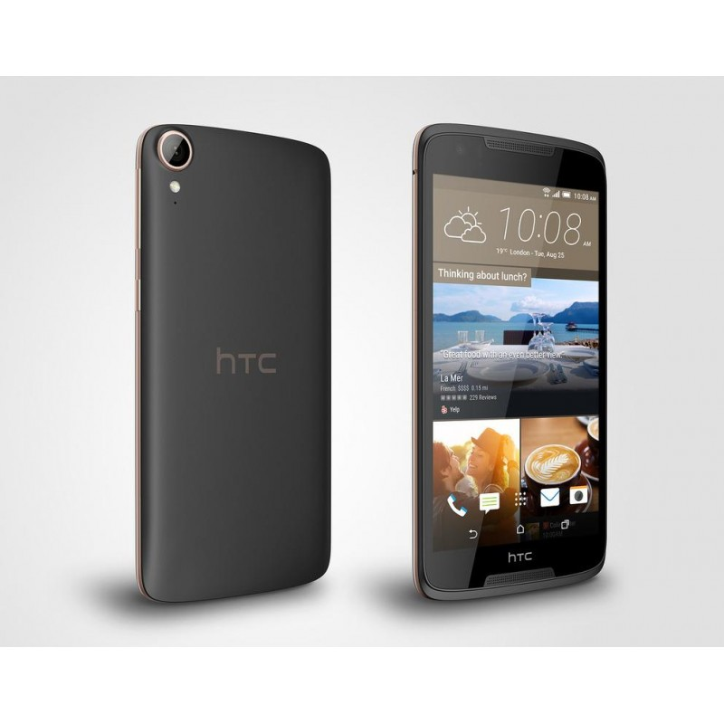

HTC Desire 828
Описание товара
Смартфон на операционной системе Android 5.1, экран 5.5″,
разрешение 1920×1080, 8-ядерный процессор 1500 МГц, камера 13Мп,
GPS, ГЛОНАСС
Характеристики товара
| Тип корпуса | моноблок |
| Технология 4G (LTE) | есть |
| Тип SIM-карты | нано-SIM |
| Операционная система | Android 5.1 |
| Дисплей | 5.5″, Super LCD |
| Разрешение дисплея | 1920х1080 |
| Процессор | 1500 МГц, 8-ядерный |
| Объем оперативной памяти | 2 Гб |
| Объем встроенной памяти | 16 Гб |
| Максимальный объем карты памяти | 2 Тб |
| Основная камера | 13 Мп |
| Вторая камера | 4 Мп |
| Встроенный модуль GPS | есть |
| Встроенный модуль ГЛОНАСС | есть |
| Емкость аккумулятора | 2800 мАч |
| Размеры (ШхВхТ) | 78.9х157.7х7.9 мм |
| Вес | 148 г |
| Страна производства | Китай |
| Оффициальный сайт | HTC |
Подробное описание товара
Смартфон HTC Desire 828 выполнен с ярком белом цвете. Сердцем модели
выступает 8-ядерный процессор Mediatek тактовой частотой 1500 МГц.
Обработкой графики занимается встроенный ускоритель Mali-T720.
Наличие 2 Гб оперативной памяти улучшает производительность приложений.
Для хранения данных выделено 16 Гб флеш-памяти. Поддерживается установка
карт памяти microSDXC. Устройство рассчитано на одну nanoSIM-карту.
Смартфон HTC Desire 828 оборудован Super LCD-дисплеем диагональю 5.5 дюймов
и разрешением 1920×1080 пикселей. Взаимодействие с пользователем
осуществляется через операционную систему Android 5.1. Основная камера
способна снимать видеоролики качеством 1080p за счет 13-Мп матрицы.
Поддерживаются беспроводные интерфейсы передачи данных GSM, 3G и 4G.
Питание передает аккумулятор на 2800 мАч.